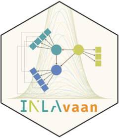

Convergence and Approximation Diagnostics for INLAvaan Models
Source:R/method-diagnostics.R
diagnostics.RdExtract convergence and approximation-quality diagnostics from a fitted
INLAvaan model.
Usage
diagnostics(object, ...)
# S4 method for class 'INLAvaan'
diagnostics(object, type = c("global", "param"), ...)Arguments
- object
An object of class INLAvaan.
- ...
Currently unused.
- type
Character.
"global"(default) returns a named numeric vector of scalar diagnostics."param"returns a data frame with one row per free parameter containing per-parameter diagnostics.
Value
For type = "global", a named numeric vector (class
"diagnostics.INLAvaan"). For type = "param", a data frame
(class c("diagnostics.INLAvaan.param", "data.frame")).
Details
The diagnostics are those of the engine that fits the model (the files of
inlavanilla that INLAvaan copies), in its order and under its names. Then
come the diagnostics that INLAvaan adds for structural equation models, and
last the names that INLAvaan 0.4.0 deprecates. Read the values by name, not
by position. A posterior SD here is the Laplace SD at the mode, \(s_j\),
the square root of the diagonal of \(\Omega\), the covariance matrix of
the Laplace approximation. Values that a fit did not compute are
NA: the VB quantities with vb_correction = "none", and the
scan quantities with Gaussian marginals (marginal_method =
"gaussian") and for the intercepts of a saturated mean structure, whose
marginals are Gaussian and have no scan.
Global diagnostics (type = "global"):
nparNumber of free parameters.
converged1 if the optimiser converged, 0 otherwise.
iterationsNumber of optimiser iterations. When the gradient at the first mode is too large, the optimiser runs again from there, and this is the total of both runs.
grad_infL-infinity norm of the analytic gradient at the mode (max |grad|). Should be ~0 at convergence.
grad_inf_relRelative L-infinity norm of the analytic gradient (max |grad| / (|par| + 1e-6)).
grad_l2L2 (Euclidean) norm of the analytic gradient at the mode.
mode_shift_maxMaximum, across parameters, of the Newton step at the reported mode in posterior-SD units (max |\(\Omega\) grad| / s). Unlike the raw gradient norms this is scale-free: it estimates how far the reported mode sits from the true posterior mode relative to the posterior uncertainty. Should be ~0 at convergence.
hess_condCondition number of the Hessian at the mode, the ratio of the largest to the smallest eigenvalue of \(\Omega\). It depends on the units of the parameters.
hess_cond_corThe same for the posterior correlation matrix, with each parameter in its own posterior-SD units, so it is free of units. Large values mean that some combination of the parameters is weakly identified. The fit-time check reads this one.
vb_applied1 if VB correction was applied, 0 otherwise.
vb_shift_maxMaximum, across parameters, of the absolute VB correction in posterior-SD units (max |
vb_shift_sigma|).vb_kld_globalKL divergence between the Laplace Gaussian and its VB-shifted copy, \(\frac12 \delta^\top \Omega^{-1} \delta\), which is also the VB term of the marginal log-likelihood.
kld_maxMaximum per-parameter KL divergence from the VB correction.
kld_meanMean per-parameter KL divergence.
nmad_maxMaximum normalised max-absolute-deviation across the scanned marginals.
nmad_meanMean NMAD across the scanned marginals.
unscanned_mass_maxMaximum, across parameters, of
unscanned_mass(see below). Before INLAvaan 0.4.0 it wasscan_end_mass_max.grad_gap_maxMaximum
grad_gap(see below). Should be ~0.vb_fallback1 if the VB correction handed over to its fallback optimiser, 0 otherwise. It is recorded only: the fallback is a route of the solver, and the other VB checks judge where it lands.
vb_step_maxMaximum
vb_step_sigma(see below).vb_lhat,vb_j0,vb_j1The check of the one-step VB correction, from a second pass of its rule at the step. The step is the first iterate of a fixed-point map whose fixed point is the VB mean, and it is close to that mean only where the map is a contraction.
vb_lhatis the size of the residual of the VB equation at the step over its size at the mode.vb_j0andvb_j1are the slope of the map along the step, at the mode and at the step. The check passes whenvb_lhatis below 1 and both slopes lie between -1 and 1, and a value that is not finite fails it.NAwithvb_correction = "full", and when the step was belowvb_tol(seeinlavaan_control()) in every parameter, which is too small to check.vb_solve1 if the check of the one-step VB correction failed, 0 if it passed,
NAif it did not run. After a failed check the fit solves the VB equation instead, from the mode, at no more cost than the search for the mode and the Hessian took, and the fit-time warning says that the posterior is far from Gaussian along the mean correction (see below).mean_gap_maxMaximum, across parameters, of |
mean_gap| (see below).ridge_bend_maxMaximum
ridge_bend(see below).n_heavy_tailsNumber of marginals with heavy tails, those whose
tailsisFALSE.nsampNumber of posterior samples drawn.
psi_npd_shareShare of the posterior draws in which the covariance matrix of the latent variables (
psi) of some block is not positive definite. Each correlation is kept in (-1, 1) on its own, but a block of several free correlations can still leave the matrix indefinite, and the likelihood guards only the model-implied covariance matrix. Zero when nopsimatrix has a free covariance.theta_npd_shareThe same share for the residual covariance matrix of the observed variables (
theta).vb_mcse_max,vb_mcse_meanDeprecated, and always
NA: the VB correction uses a deterministic rule, which has no quadrature error. They will be removed in INLAvaan 0.5.0.
Per-parameter diagnostics (type = "param"):
A data frame with columns:
namesParameter name.
gradAnalytic gradient of the negative log-posterior at the mode. Should be ~0 at convergence.
grad_absAbsolute analytic gradient.
grad_relRelative analytic gradient |grad| / (|par| + 1e-6), with par the posterior mean on the internal scale.
mode_shift_sigmaNewton step at the reported mode in posterior-SD units. Should be ~0 at convergence.
kldKL divergence between the Laplace Gaussian marginal and its VB-shifted copy,
vb_shift_sigma^2 / 2.vb_shiftVB correction shift (on the internal scale).
vb_shift_sigmaVB shift in units of posterior SD.
nmadNormalised max-absolute-deviation of the skew-normal fit from the scanned posterior.
alphaShape parameter of the fitted skew-normal marginal, on the internal scale. Zero is a Gaussian marginal, and the sign gives the direction of the skew.
unscanned_massMass the fitted marginal puts outside the window that was scanned to fit it, \(F(\hat\theta_j - 4 s_j) + 1 - F(\hat\theta_j + 4 s_j)\), where \(F\) is the fitted skew-normal distribution function and \(\hat\theta_j\) the posterior mode. The marginal is fitted inside that window only, so mass outside it is extrapolation, and when this is large the 2.5\ A Gaussian marginal gives \(2\Phi(-4)\) = 6.3e-05, and healthy fits sit between 1e-03 and 1e-02. Before INLAvaan 0.4.0 it was
scan_end_mass.grad_gapHow far the analytic gradient is from central differences of the log-posterior at the mode: the larger of the gap in slope per conditional posterior SD (about how far a wrong gradient moves the mode, in posterior SDs) and half the relative gap in curvature (about the relative error it makes in a posterior SD). Should be ~0.
vb_step_sigmaThe step still to go at the VB mean, in posterior-SD units, as
mode_shift_sigmais for the mode.NAafter the default one-step VB correction when its check passed. When the check failed (vb_solve), it is the step still to go where the solve stopped: atvb_tol, atvb_maxitor at the cap on its cost thatvb_budgetsets (seeinlavaan_control()). It is then not a check of its own, but the bullet on the failed check says how far the solve stopped short when it is above 0.1. Withvb_budget = 0the fit stays at the mode, and it is the first step of the fixed-point rule from the mode. That step can be much larger than the distance from the mode to the VB mean, so it then overstates how far the solve stopped short.mean_gapGap between the mean of the skew-normal marginal and the VB mean, in posterior-SD units. Both estimate the shift from the mode to the posterior mean, so a large gap says that the posterior is far from Gaussian along this parameter.
gamma1The volume correction of the scan: the slope, per posterior SD, added to the scanned log-posterior for the changing volume of the other parameters.
tailsFALSEwhen the density at an end of the scan is still above 5\ skew-normal extrapolates it.ridge_bendThe log-density, in nats, that the straight scan misses at 2 posterior SDs either side of the mode, where the ridge of high posterior density bends away from it. A large value means that the marginal may be too narrow: 0.25 is a posterior SD about 10\ small.
grad_num,grad_diff,vb_mcse_sigmaDeprecated, and always
NA:grad_gapchecks the analytic gradient in place ofgrad_numandgrad_diff, and the VB shift has no quadrature error. They will be removed in INLAvaan 0.5.0.
Fit-time warnings: inlavaan() runs these checks once at the end
of every fit and emits a single consolidated warning (condition class
"inlavaan_diagnostics_warning") when any of them looks off:
the optimiser did not converge;
any parameter with
grad_gapabove 0.1;mode_shift_maxabove 0.1 posterior SDs;the VB correction did not settle:
vb_step_maxabove 0.1 posterior SDs, except after the solve that follows a failed one-step check;the one-step VB correction failed its check (
vb_solveis 1): the posterior is far from Gaussian along the mean correction. The warning names the parameter that the one step moved furthest, and when the solve that followed stopped withvb_step_maxabove 0.1 posterior SDs, it says so;any marginal with
nmadabove 0.1;any marginal with
unscanned_massabove 0.05;any marginal with heavy tails;
vb_shift_maxabove 1 posterior SD;hess_cond_corabove 1e8;the latent or residual covariance matrix is not positive definite at the posterior estimates (the check that lavaan runs after a fit);
psi_npd_shareortheta_npd_shareabove 0.01.
When the optimiser did not converge, the warning says what to try: to raise
mode_maxit or mode_maxeval in inlavaan_control() when it
stopped at one of these limits, and other starting values otherwise.
When mode_shift_max is above 1, or a marginal puts more than 0.9 of
its mass outside its scan, the warning also says that the mode may be far
from the posterior mass. The ridge bend and the mean gap never warn.
Three of these checks have calibration behind them. Over 1,046 simulated
fits with MCMC references, the Spearman correlation with the worst-case
posterior-mean discrepancy was 0.64 for the VB shift in SD units, 0.59 for
the unscanned mass and 0.48 for the NMAD. The other checks are rules of
thumb. Every number above is a package default, chosen so that a healthy
fit stays silent, and not a calibrated cut-off: a tripped check is a prompt
to look again, and silence is not a certificate of accuracy. Silence the
check with suppressWarnings(), or selectively by handling the
condition class.
Examples
# \donttest{
HS.model <- "
visual =~ x1 + x2 + x3
textual =~ x4 + x5 + x6
speed =~ x7 + x8 + x9
"
utils::data("HolzingerSwineford1939", package = "lavaan")
fit <- acfa(HS.model, HolzingerSwineford1939, std.lv = TRUE, nsamp = 100,
test = "none", silent = TRUE)
# Global convergence summary
diagnostics(fit)
#> npar converged iterations grad_inf
#> 21 1 66 2.02e-03
#> grad_inf_rel grad_l2 mode_shift_max hess_cond
#> 4.52e-03 3.01e-03 1.80e-04 4.51e+01
#> hess_cond_cor vb_applied vb_shift_max vb_kld_global
#> 1.36e+01 1 0.1992 0.0784
#> kld_max kld_mean nmad_max nmad_mean
#> 0.0198 0.0065 0.0229 0.0060
#> unscanned_mass_max grad_gap_max vb_fallback vb_step_max
#> 1.02e-03 6.06e-04 0 NA
#> vb_lhat vb_j0 vb_j1 vb_solve
#> 0.1154 -0.0025 0.0421 0
#> mean_gap_max ridge_bend_max n_heavy_tails nsamp
#> 0.0393 0.5783 0 100
#> psi_npd_share theta_npd_share vb_mcse_max vb_mcse_mean
#> 0.0000 0.0000 NA NA
# Per-parameter table
diagnostics(fit, type = "param")
#> names grad grad_abs grad_rel mode_shift_sigma kld vb_shift
#> 1 visual=~x1 1e-04 1e-04 0.0001 1e-04 0.0056 0.0088
#> 2 visual=~x2 0e+00 0e+00 0.0000 1e-04 0.0008 0.0032
#> 3 visual=~x3 3e-04 3e-04 0.0004 1e-04 0.0033 0.0063
#> 4 textual=~x4 9e-04 9e-04 0.0009 0e+00 0.0175 0.0106
#> 5 textual=~x5 -2e-03 2e-03 0.0018 1e-04 0.0182 0.0120
#> 6 textual=~x6 1e-03 1e-03 0.0011 0e+00 0.0159 0.0096
#> 7 speed=~x7 1e-04 1e-04 0.0001 0e+00 0.0029 -0.0056
#> 8 speed=~x8 0e+00 0e+00 0.0000 0e+00 0.0004 -0.0021
#> 9 speed=~x9 1e-04 1e-04 0.0001 0e+00 0.0198 0.0153
#> 10 x1~~x1 6e-04 6e-04 0.0011 2e-04 0.0023 -0.0146
#> 11 x2~~x2 1e-04 1e-04 0.0010 0e+00 0.0021 0.0059
#> 12 x3~~x3 -7e-04 7e-04 0.0042 1e-04 0.0003 0.0027
#> 13 x4~~x4 4e-04 4e-04 0.0004 0e+00 0.0006 0.0045
#> 14 x5~~x5 0e+00 0e+00 0.0000 0e+00 0.0005 0.0039
#> 15 x6~~x6 5e-04 5e-04 0.0005 0e+00 0.0013 0.0063
#> 16 x7~~x7 9e-04 9e-04 0.0045 1e-04 0.0187 0.0211
#> 17 x8~~x8 -5e-04 5e-04 0.0007 0e+00 0.0045 0.0177
#> 18 x9~~x9 2e-04 2e-04 0.0004 0e+00 0.0138 -0.0260
#> 19 visual~~textual -2e-04 2e-04 0.0004 0e+00 0.0004 -0.0023
#> 20 visual~~speed 7e-04 7e-04 0.0014 1e-04 0.0056 0.0115
#> 21 textual~~speed 2e-04 2e-04 0.0009 0e+00 0.0023 0.0052
#> vb_shift_sigma nmad alpha unscanned_mass grad_gap vb_step_sigma mean_gap
#> 1 0.1060 0.0094 0.5391 6.18e-05 5e-04 NA 0.0044
#> 2 0.0397 0.0004 0.5437 7.39e-05 1e-04 NA -0.0040
#> 3 0.0814 0.0024 0.6498 8.65e-05 2e-04 NA -0.0058
#> 4 0.1872 0.0032 0.9488 2.28e-04 6e-04 NA 0.0026
#> 5 0.1909 0.0033 0.9527 2.33e-04 6e-04 NA 0.0027
#> 6 0.1786 0.0032 0.9433 2.17e-04 6e-04 NA 0.0019
#> 7 -0.0759 0.0027 -0.8595 1.26e-04 2e-04 NA -0.0003
#> 8 -0.0274 0.0141 -0.7908 6.02e-05 5e-04 NA 0.0134
#> 9 0.1992 0.0160 0.8778 1.26e-04 4e-04 NA -0.0226
#> 10 -0.0676 0.0112 -2.2918 6.25e-04 1e-04 NA 0.0393
#> 11 0.0644 0.0014 0.3315 7.18e-05 1e-04 NA 0.0033
#> 12 0.0237 0.0026 -1.1177 1.54e-04 1e-04 NA 0.0058
#> 13 0.0350 0.0033 -1.0977 1.49e-04 0e+00 NA -0.0012
#> 14 0.0302 0.0031 -1.0794 1.47e-04 0e+00 NA -0.0011
#> 15 0.0514 0.0023 -0.9738 1.14e-04 0e+00 NA 0.0002
#> 16 0.1933 0.0036 0.5696 1.05e-04 1e-04 NA -0.0002
#> 17 0.0951 0.0229 -1.3190 6.16e-05 0e+00 NA 0.0176
#> 18 -0.1662 0.0067 -2.1897 1.02e-03 0e+00 NA 0.0371
#> 19 -0.0288 0.0010 0.5158 6.55e-05 0e+00 NA -0.0007
#> 20 0.1063 0.0111 1.2491 2.35e-04 2e-04 NA -0.0140
#> 21 0.0679 0.0026 0.5496 7.33e-05 1e-04 NA -0.0011
#> gamma1 tails ridge_bend grad_num grad_diff vb_mcse_sigma
#> 1 0.0941 TRUE 0.1798 NA NA NA
#> 2 0.0204 TRUE 0.0127 NA NA NA
#> 3 0.0501 TRUE 0.0286 NA NA NA
#> 4 0.1267 TRUE 0.0140 NA NA NA
#> 5 0.1297 TRUE 0.0143 NA NA NA
#> 6 0.1184 TRUE 0.0144 NA NA NA
#> 7 -0.0261 TRUE 0.1379 NA NA NA
#> 8 0.0355 TRUE 0.2398 NA NA NA
#> 9 0.1149 TRUE 0.2188 NA NA NA
#> 10 0.2904 TRUE 0.1184 NA NA NA
#> 11 0.0639 TRUE 0.0108 NA NA NA
#> 12 0.1164 TRUE 0.0469 NA NA NA
#> 13 0.1160 TRUE 0.0137 NA NA NA
#> 14 0.1084 TRUE 0.0125 NA NA NA
#> 15 0.1148 TRUE 0.0142 NA NA NA
#> 16 0.1739 TRUE 0.1442 NA NA NA
#> 17 0.2583 TRUE 0.5783 NA NA NA
#> 18 0.1710 TRUE 0.2025 NA NA NA
#> 19 -0.0422 TRUE 0.0335 NA NA NA
#> 20 -0.0239 TRUE 0.1077 NA NA NA
#> 21 0.0511 TRUE 0.0151 NA NA NA
# }